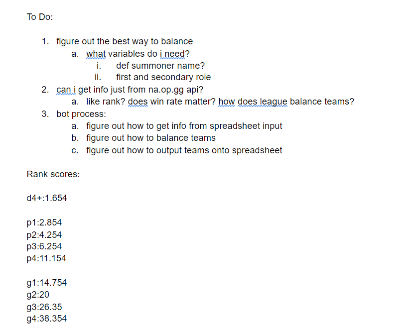

Team Maker
An algorithm to create League of Legends teams.
A Short Description
Context
Creating a script to make my position as ESports Community Director easier
Time
Two weeks
Tech Stacks Used
Python, Google Sheets API
An In-Depth Look
As the League of Legends Community Director at Umich Esports, I wanted to connect and bring together the large amount of students that played League of Legends at UMich. During Fall of 2020, I proposed the idea of Round Robins where students can sign up and play games with other UMich students. All skill levels are allowed; I wanted students to be able learn and teach the game, as well as make new friends.
The Round Robins took place about every two weeks. For each Round Robin, we would have to make new teams depending on signups. The process of creating balanced teams where the skill level was approximately even on both teams was tedious when done by hand.
To really see how tedious it would be, here is what team making depended on:
So, there is a lot that goes into balancing teams than meets the eye.
The Planning
I spent a couple days thinking about how the algorithm would work, and also consulted my friend who is the League of Legends coach for Northeastern University. Here are some notes I took, and also the beginning of balancing rank:
From there, I started to come up with a flow-chart for an algorithm I thought would work. With some Youtube videos about Google Sheets API, and a lot of time later, I coded a script that would take Google Sheets responses, make teams, and print them out on Google Sheets. Hooray!
How It Works
Here is how the algorithm works, in list form, and simplified:
Below is a google sheet that I used to test if the code worked. "Players" has all the players that entered the Round Robin. "Teams" has 6 teams and therefore 3 matches that can be played at the same time, and each team has their score on the left. The algorithm is set so the team scores cannot differ by more than 10.